Network boot a Raspberry Pi 4
In this guide I will be going over the entire process of preparing a Raspberry Pi 4 for network booting, from configuring a custom Raspberry Pi OS image to setting up a DHCP/TFTP server in order to serve it to a Raspberry Pi 4.
This guide aims to guide you through all stages of the process, instead of having to follow different guides for different topics in order to achieve working network booting. I will be explaining everything from a beginners perspective, so don't worry if you don't have a lot of experience in this area!
More about Network booting
Network booting is the process of, you guessed it, booting a computer over the network with no copy of the operating system stored locally. The goal of this guide is to set up this process with a pair of Raspberry Pi's by configuring different programs and services in order to serve up the OS to the client when it tries to boot.
If you'd like to read more indepth into the tools we'll be using in this guide, I've written a longer post about the project which you can read here: https://jamzss.github.io/rpi-network-boot/
The interactions we hope to set up between the client and server will allow for the client to receive an IP address via DHCP, and an operating system via NFS and TFTP, summarised in a diagram below:
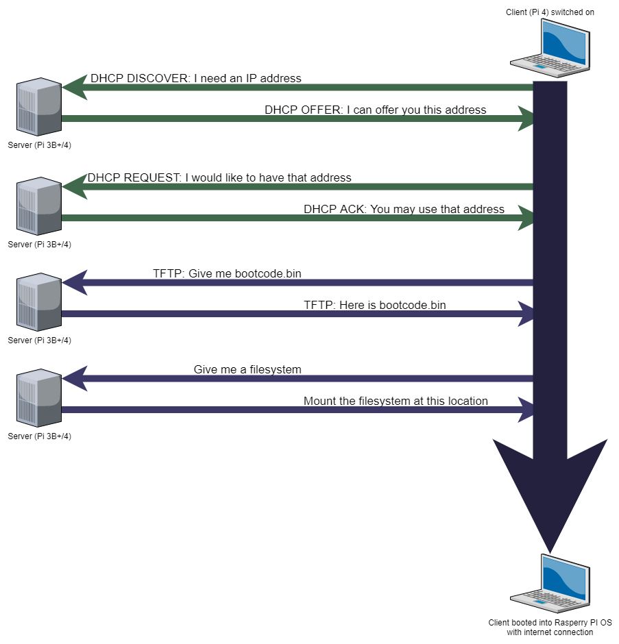Required Resources
This guide will assume that you are also using a Raspberry Pi (either a 3B+ or a 4) as a server, and a Raspberry Pi 4 as a client. The Raspberry Pi 4 is the first Pi to come with a flashable bootloader with PXE support, making this process much simpler than previous models.
You will need the following things in order to complete this process:
- An Ubuntu Installation
- A Raspberry Pi 4 (acting as our client)
- A Raspberry Pi 3B+ or 4 (acting as our server)
- A single Micro SD card
- Some way of attaching the SD card to the Ubuntu installation, whether that be through an inbuilt port or USB adapter
- An isolated network allowing an Ethernet connection for each Raspberry Pi (Network booting over WiFi is not currently possible with this setup)
- A way for the server Pi to connect to the internet through WiFi, separate from the isolated network.
Step 1 - Install Ubuntu
We will be using Ubuntu to build and flash our custom Raspbian OS images. If you already have a working Ubuntu installation, ensure you have gparted installed:
sudo apt install gpartedand skip to Step 2.
Start by downloading the latest Desktop image of Ubuntu from from their website. I will be using version 20.04 LTS, but the latest version will work fine.
Setting up VirtualBox
If you are already familiar with VirtualBox, skip to the next part where we set up Ubuntu. Ensure you have an Ubuntu VM with at least 40 GB of disk space.
VirtualBox is a piece of software used to install and manage virtual machines, essentially a computer within a computer. It is perfect for our needs since it is free and relatively simple to set up.
To begin, head to the downloads section of their webpage then download and save the appropriate version for your operating system. I am using Windows, so I will download the Windows package. Continue through the installation process and open VirtualBox.
Now we will create our Ubuntu VM. Click the New button to create a new virtual machine.
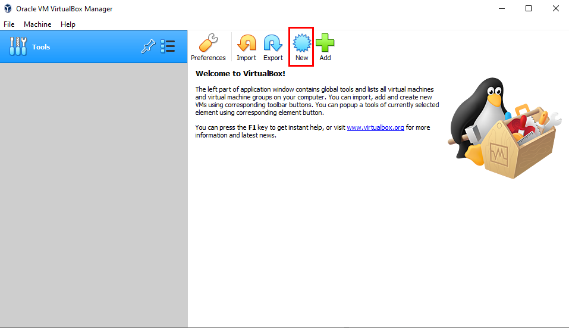Give it a name, specify the type, and also make sure you're happy with the machine folder. If you have multiple hard drives this is the time to choose where you want the virtual machine to be installed.
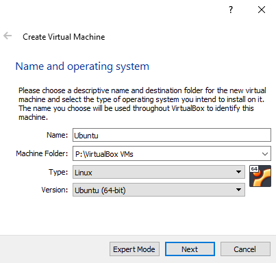Next you will be prompted to choose the amount of system memory. This defaults to 1GB, but to be generous, if you have it available, feel free to add more.
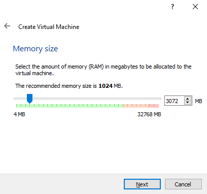You will then need to add a virtual hard disk. Click Create in the dialog box and ensure the type of disk selected is VDI, and that the size is dynamically allocated, though these settings should be automatically set.
Depending on what type of image you will be installing, you will need to increase the size of the hard disk in order to hold the image and operating system while we configure them. I would recommend no less than 40 GB of disk space, though it is possible to change this in the future.
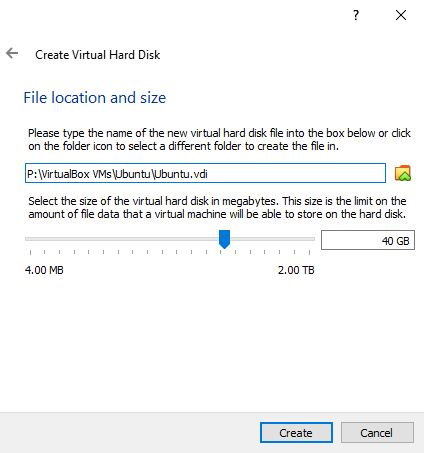Installing Ubuntu
If you have installed Ubuntu previously, feel free to skip to the next step.
Now that we have our virtual machine set up, we can start it and install Ubuntu. Hit the start button at the top of the window to get it going!
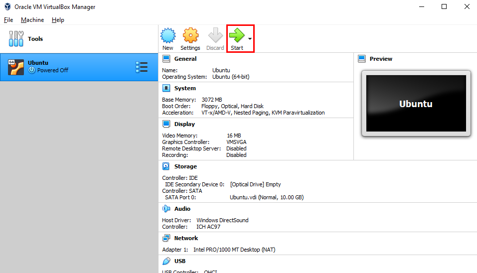You will then be prompted to select a start-up disk. Click the folder icon in the bottom right to open the selector menu, and Add and locate your Ubuntu image downloaded in the earlier stage.
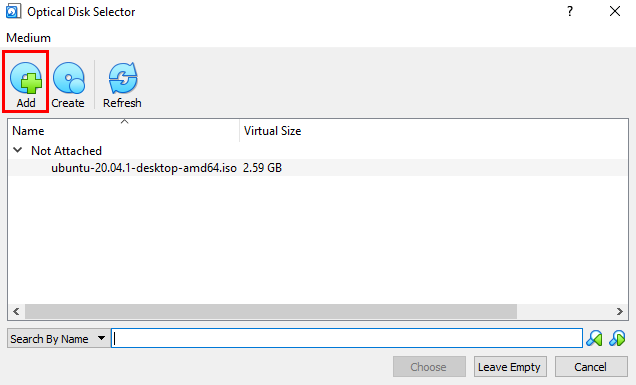If you are not prompted with this menu, or you cannot click "Choose" in the dialog box, close the dialog box and your VM should display an error message:
FATAL: No bootable medium found! System halted.To add the start-up disk through an alternative method, click the Devices menu, then Optical Drives and Choose a disk file. Locate and select your Ubuntu .iso then restart the machine.
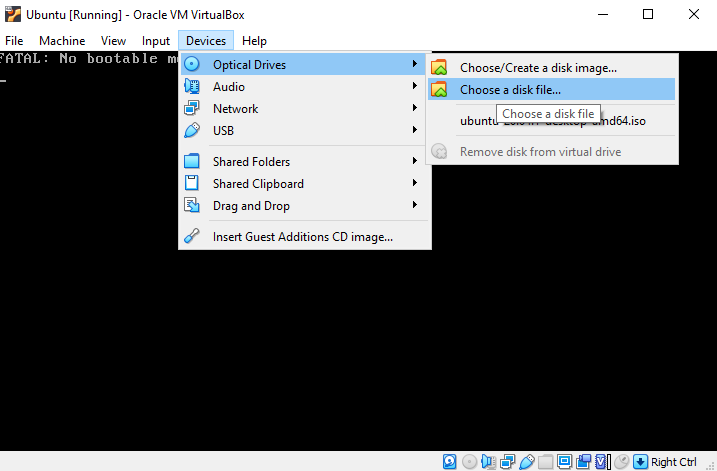Ubuntu will then perform a disk check and boot into the install menu. When prompted, click Install Ubuntu, not Try Ubuntu. Select your keyboard layout then choose the Minimal installation.
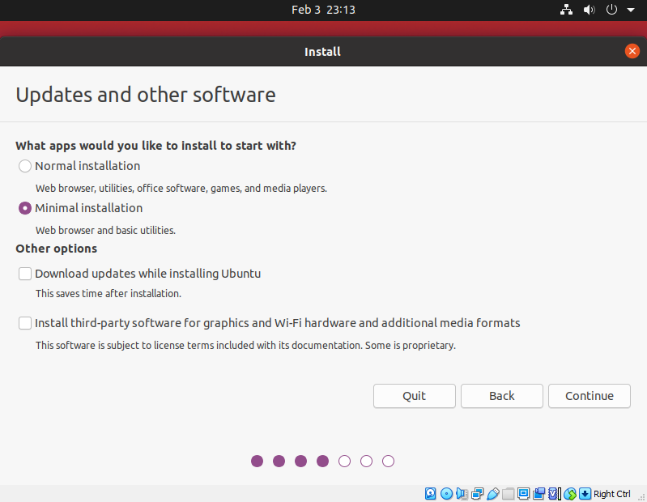Next, keep the default Erase disk and install Ubuntu option and hit Install Now. When prompted again, just hit Continue then select your location and set up a username and password.
Once the installation has been completed, you will be prompted to restart. When met with the screen asking you to remove the installation media, just press enter.
You can then log in with the username and password you created previously, and you now have a working Ubuntu installation!
To make the next step a little more bearable, we will adjust the screen resolution from the default. To do this, in Ubuntu, click the Show applications menu in the bottom left of the screen, type in "Settings" and scroll down in the menu until you find the Screen Display tab.
Here, you can then set the resolution for your display. It's best to choose the resolution closest to the resolution of your physical display, but not the same or larger. I've found that on 1080p monitors, a resolution of 1440 x 900 works well. 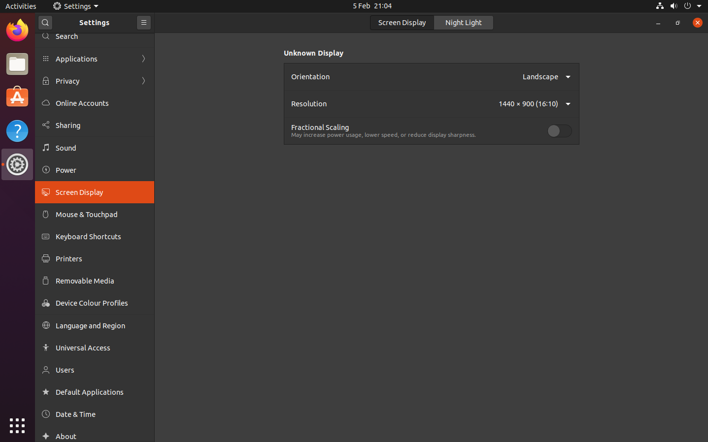 Upon applying the changes, VirtualBox should automatically resize to match the resolution you chose.
Step 2 - Building our Server Image
Now that we have Ubuntu installed, we need to flash an image to the SD card for our server to boot from. I will be using Raspberry Pi OS Lite, since we don't really need a desktop environment for our server.
Downloading Programs
In your Ubuntu installation, download the latest version of Pi OS Lite from the Raspberry Pi Foundation's and extract the .iso file to a memorable location. https://www.raspberrypi.org/software/operating-systems/
You will also need to download a program called balenaEtcher. https://www.balena.io/etcher/ This is what we will be using to flash the image to our SD card. Extract the .AppImage file then double-click inside the Files explorer to open it. If it doesn't open after a few seconds, open a Terminal window, navigate to the directory you extracted it to and type the following command:
./balenaEtcher-1.5.116-x64.AppImageThis will execute the program directly, just replace anything past the ./ with the name of your file. After you type the first few characters, pressing TAB should fill in the rest for you.
Attaching SD card to Virtual Machine
This is only applicable if you're using a VirtualBox installation, if you have Ubuntu installed on a physical machine, you should have no issues with the SD card appearing when you plug it or an adapter in.
With VirtualBox, you must manually tell it which USB devices to attach to your VM. To do this, in the menu at the top of your virtual machine, click Devices, then USB, then click on the name of your USB adapter.
Troubleshooting Steps
If the USB device does not mount after a few attempts, you can try a few of the steps below:
- Add a device filter for your adapter. Go to the Devices then USB menu, but this time select USB Settings. Click the USB icon with a green plus, then add your device from that menu 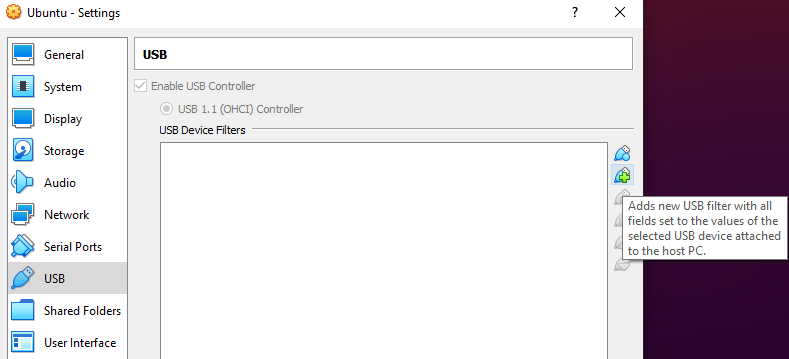
- Plug it into a different USB port. I personally have had success plugging the USB SD card adapter into an external USB hub, then plugging that into my PC. The device should still show up as the same name when doing this.
- Download the VirtualBox Extension Pack. The Extension Pack comes with extra support for USB 3.0 devices, and you may have better luck having it installed. There is only one download no matter what platform you are on. To install it, just download the file and run it, then click install in the menu that appears in VirtualBox. Just ensure it is the same version as your VirtualBox installation. You can download it here. 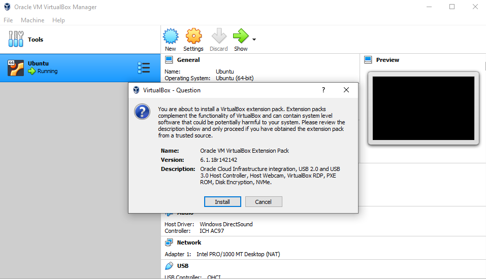
Using Etcher
Etcher has a very simple user interface. You choose an .iso file to flash from, a drive to flash to, then hit Flash and it does its thing.
We will be flashing our Pi OS Lite .iso file to our SD card. So to begin, click Flash from file at the first part of the menu, then navigate to and select your image. 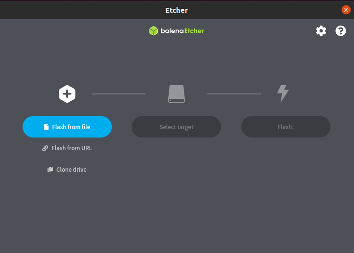
Next, you will need to select your SD card. Click the Select Target button and tick your SD card. 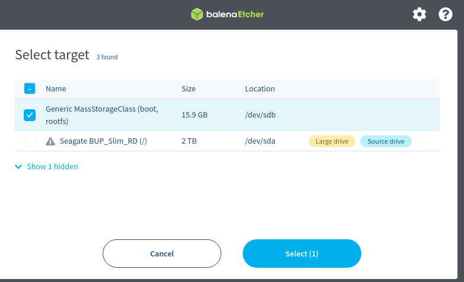
Once you've done that, hit flash, and wait for the process to complete. Once it has completed, eject the card and insert it into the server Pi to ensure it works. We now have our server image we can use in order to set up network booting!
Step 3 - Client Configuration
We will now use the server image we just created in order to configure the bootloader on our client. By default, the Raspberry Pi 4 bootloader does not automatically attempt to network boot, and only attempts to boot from an SD card or attached USB device, so we will need to change the bootloader settings in order for our client to search for our TFTP server.
First, power on the client Pi without an SD card, or connected to a network. Make sure your display is connected.
You should be greeted by the bootloader screen. This screen contains a lot of information and may seem overwhelming, but we're only looking for one bit of text.
You should see a line of text near the top which looks something like this:
board: c03111 c94401e1 dc:a6:3d:83:27:c2That middle value, c94401e1, is the serial number of our client. Yours will be different, but you'll need to make a note of it for the server configuration later on.
Then, insert the SD card with the image we just built into the client Pi 4 and let it boot into the terminal. We will now edit the bootloader configuration.
Bootloader Configuration
To begin, ensure you have the latest version of the rpi-eeprom package by running the following commands:
sudo apt update
sudo apt full-upgradeNext, to edit the EEPROM configuration, run:
sudo -E rpi-eeprom-config --editThe field we need to change is the BOOT_ORDER line. By default, it should read 0xf41 which means to try the SD card a few times, then attempt to boot from USB. A full list of these values can be found here. We will replace 0xf41 with 0xf21. This will attempt to boot from the SD card first, then from the network.
The reason I recommend attempting to boot from the SD card first is mainly for efficiency. If for some reason in the future we need to boot from the SD card, it takes a long time (multiple minutes) to iterate through the retries for network booting, on the other hand, the attempts to boot from the SD card take only a few seconds at most.
You could change the default timeout values to get around this, but this setup will work great for most use cases. Our configuration file should now look something like this:
[all]
BOOT_UART=0
WAKE_ON_GPIO=1
POWER_OFF_ON_HALT=0
DHCP_TIMEOUT=45000
DHCP_REQ_TIMEOUT=4000
TFTP_FILE_TIMEOUT=30000
TFTP_IP=
TFTP_PREFIX=0
BOOT_ORDER=0xf21
SD_BOOT_MAX_RETRIES=3
NET_BOOT_MAX_RETRIES=2
[none]
FREEZE_VERSION=0Then, strike CTRL+X to save the file, and hit Y then ENTER to confirm. Reboot to apply the update, then you can shut down and remove the SD card from the client, since the next time we boot it, it will be from our server.
Step 4 - Server Configuration
We will now configure our Pi 3B+/4 server to serve an image to our client and let it join the network via a TFTP/DHCP server.
Initial Setup
Insert the SD card back into the server and boot it. Before we begin the setup, ensure that the root file system has been expanded to fill the entire SD card. To do this, run:
sudo raspi-config And select option 6 Advanced Options then A1 Expand Filesystem. Reboot to apply the changes.
Next, we will download two scripts to configure the tools required to boot the client and give it access to the internet. If you'd like to read more into the specific tools being used, they are explained more indepth on a separate post I have written about the project.
https://jamzss.github.io/rpi-network-boot/
Run the following commands to download the scripts:
sudo wget https://github.com/jamzss/rpi-network-boot/raw/main/server-setup-1.sh
sudo wget https://github.com/jamzss/rpi-network-boot/raw/main/server-setup-2.shNext, you will need to edit some values in the server-setup-2.sh file in order for it to run properly. To do this, run:
sudo nano server-setup-2.shNear the top of the script are variable declarations, and you'll need to change the values in quotation marks to ensure the script runs correctly.
serial - replace with the serial number of your client that you recorded earlier
network_ssid - replace with the SSID (name) of your wireless network the server will connect to
network_psk - replace with the password of your wireless network
router_address - replace with the IP address of the router on your wireless network.
These instructions are very important, follow them closesly:
While connected to the internet
sudo sh server-setup-1.sh
Type the command above to run the first script. It will download, unpack and prepare the client OS image.
While connected to the isolated network you are running your setup on (disconnected from the network you were on while running the first script)
sudo sh server-setup-2.sh
Type the command above to run the second script. It configures the networking options for both the client and server.
It is very important that this script is run while connected to the isolated network mentioned at the start of this guide, otherwise the network configuration will fail.
Success!
If all has gone well, you should now have fully set up network booting your Raspberry Pi 4! Run sudo reboot on the server, reboot the client and fingers crossed, if you have followed everything correctly, you should be booting into a working Raspberry Pi OS with no attached SD card!